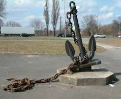

We are a leading provider of marine products and services in Kenya, committed to ensuring the safety and performance of your vessels.
We offer a wide range of commercial boats for sale, including fishing boats, passenger boats, and cargo vessels. Our boats are built to the highest standards, ensuring durability and performance on the water.
We provide reliable marine transport services for both passengers and cargo. Our fleet of vessels is equipped with modern safety features, ensuring a safe and comfortable journey for all our clients.
We supply a wide range of marine equipment, including navigation systems, safety gear, and maintenance tools. Our products are sourced from reputable manufacturers, ensuring quality and reliability for our clients.
